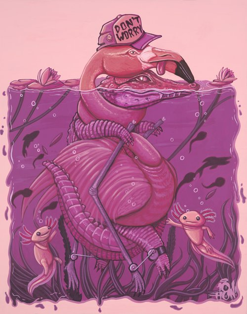

Sidot | Tobi Awolaju
This is Beyond than what I love to do,I was born to gift my generation This, Smile, Cry and Laugh cause Nobody
leaves this world alive.

Clerver girl| illustrating our the poor will never be rich
and how the rich will always stay rich
$30,000.00
My Work
.png)
.png)
.png)
.png)
.png)
.png)
.png)
.png)
Resources
About
Sidot is Tobi Awolaju, a graphic designer from Ile-Ife, OsunState, Nigeria who does a variety of digital
artwork including Illustrations, short films, Creative Commons VJ loops, everydays and VR / AR work.
making an art every day. 'It's either one day or day one; this is his day 189
365.

Sidot | Tobi Awolaju
This is Beyond than what I love to do,I was born to gift my generation This, Smile, Cry and Laugh cause Nobody leaves this world alive.'
Clerver girl| $5,000,0000.00
From @honor to @xeverander | $2k profit
My Works
.png)
more Works
Resources
About :)
Sidot is Tobi Awolaju, a graphic designer from Ile-Ife, OsunState, Nigeria who does a variety of digital artwork including Illustrations, short films, Creative Commons VJ loops, everydays and VR / AR work. making an art every day. 'It's either one day or day one; this is his day 189 365.